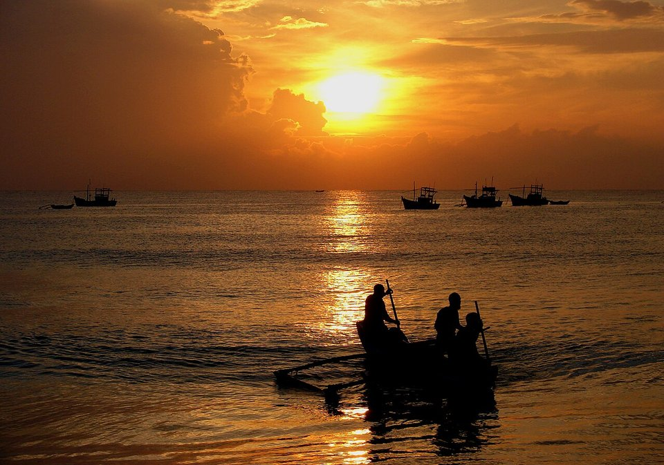
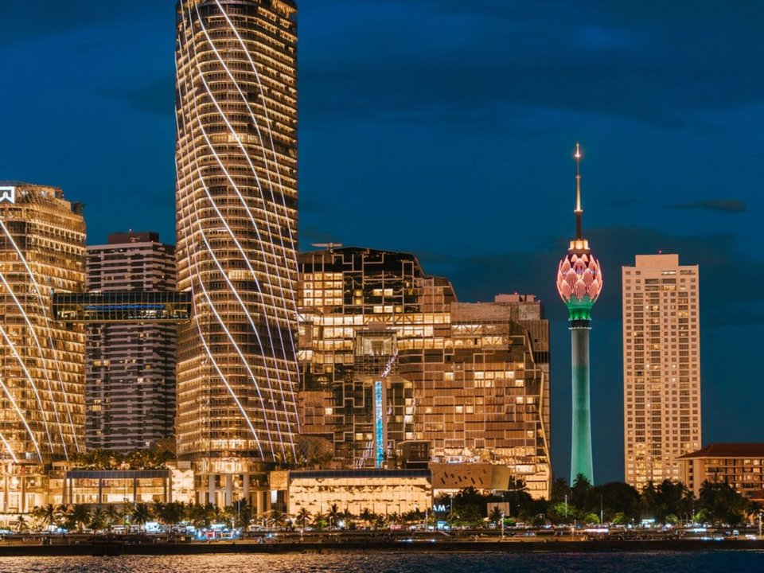
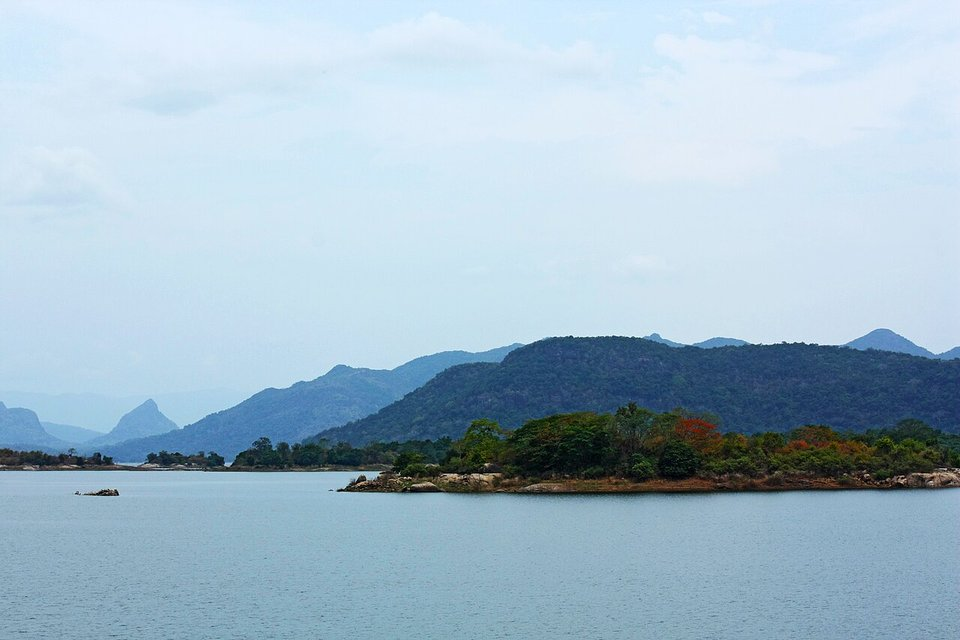
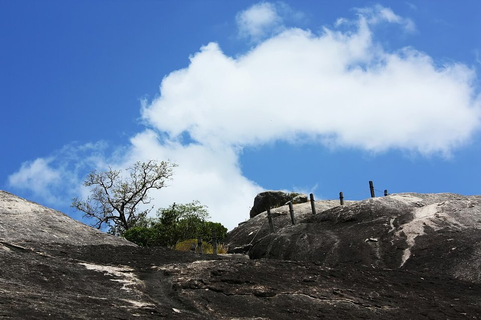
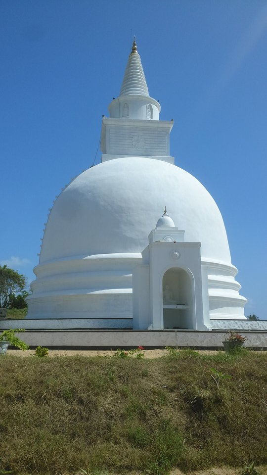

Hidden Gems in Eastern Province
Serene, uncrowded locations that reveal the true unspoiled essence of the region.
Marble Beach (Kiniya Bay)
A tranquil, emerald-green secluded cove within China Bay, famous for glass-smooth waters reflecting like polished marble, and lush forested surroundings.

Beaches & CoastlinesKalkudah Beach
The wild, peaceful sibling bay to Pasikudah, offering miles of wide golden sands, crashing surf, and shaded coconut groves without resort crowds.
Batticaloa Lagoon & Singing Fish
A sprawling 56-kilometer estuarine lagoon famous worldwide for the mysterious acoustic phenomenon of its 'Singing Fish' heard on moonlit nights.

Historical SitesBatticaloa Dutch Fort
A compact 1628 Portuguese and Dutch fortress perched on an island in the lagoon, surrounded by water moats, thick coral ramparts, and cannons.
Peanut Farm Beach
A legendary secluded surf bay south of Arugam Bay, named after an old peanut plantation, where dual surf points meet wild coastal lagoons and roaming elephants.
 National Parks
National Parks
Lahugala Kitulana National Park
A secluded 1,554-hectare national park famous for large herds of wild Asian elephants feeding on beru grass around ancient reservoir wewas.

National ParksGal Oya National Park & Senanayake Samudraya
The only national park in Sri Lanka offering boat safaris to witness wild Asian elephants swimming between islands across the vast Senanayake Samudraya.

Temples & Religious SitesKudumbigala Forest Hermitage
An ancient 246 BCE forest monastery hidden within a wildlife sanctuary, featuring over 200 natural rock caves and the only cylindrical stupa in Sri Lanka.

Ancient CitiesMuhudu Maha Viharaya
An ancient 2,000-year-old Buddhist seaside temple nestled among coastal sand dunes in Pottuvil, commemorating the heroic landing of Queen Viharamahadevi.